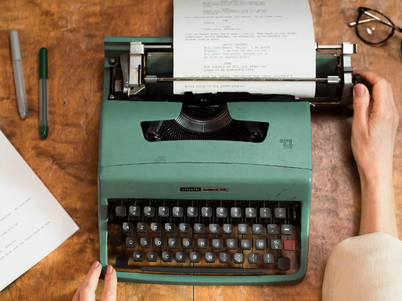

We are all about writing!
We are passionate for the classic feeling of typewriting.
Founded in 2024, we are an innovative industry focused on selling the most classic typewriters acquired from collectors all over North America.
What are Nostalgia Keys' goals?
- Provide our customers with the most amazing collectible typewriters and accessories.
- Bring the classic way of writing back to the modern world.
Encourage new users to start building their projects with typewriters. - Enjoy the hobby with our community in social media.
If you are looking for a brand-new typewritter or maybe just a couple of new ribbons to go back to work, you can find it all here.

What do our clients say?
"I had never used a typewriter before, you know. I was born in the digital era so I had only seen one of those in movies and stuff.. but it's truly amazing to work with them".
Anne Johnson - CEO and writer at GreenNews.
"I am an old writer, I've had dozens of typewriters in my life, but the ones you can find here, are just as new as the ones I had in the early 80's. You are my favourite supplier".
Carl Brandt - Toronto's Daily Post Director.
"I use my new typewriter to get inspired for my articles, I even finish them before going back to my laptop. Sometimes I get tired of screens. I totally recommed Nostalgia Keys".
Aishwarya Patel - Communications Student at Georgian College.